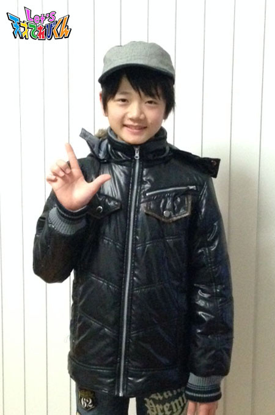

<<2014年11月 | トップページ | 2015年1月>>
2014年12月
不思議だなと思うこと［瀧澤翼］
こんにちは！
最近の寒さに足がつってしまうことがある瀧澤翼です。
この間、学校でマラソン大会がありました。
小学生でのラストラン。
悔いのないように精一杯走りました。
でも結局、6年間で1度も1位を取れなかったなぁ～・・・
そういえば、赤崎は5年連続1位って言ってたけど、本当にスゴイなぁって思います！！
さて、今回のテーマ
【 不思議だなと思うこと 】 です。
最近、いろいろな人から 「身長のびたね～！」 って言われます。
気が付けば、僕も156㎝です！！
身長って、一体いつ伸びてるんだろう？
不思議だなぁ～って思いませんか？？？
去年までお気に入りだった赤と黒のジャンパーも、ご覧のとおりピッチピチ。
ちなみに、今年のお気に入りはコレ！！
もしかしたら、来年は着れないかも・・・(^_^;

お父さんに聞いたら、
身長って夜寝ている間に伸びているから、気が付かないのだそうです。
なーるほどぉ！！
『 寝る子は育つ 』 って、そういうことかぁ！！
よーし、これからは夜更かししないで、早くねるぞ！！
それでは！
Let’s！おやすみ(-_-)zzz
投稿者:瀧澤翼 | 投稿時間:18時45分 | カテゴリ：てれび戦士 | 固定リンク
不思議だなと思うこと［赤崎月香］
こんにちは ヽ(^▽^@)ノ
赤崎月香です。
☆。・:*:・°★,。・:*:・°☆
(*^-')ノ☆;:*:;☆“Merry*Christmas
どこもキラキラしていて、
ワクワクします♪
写真は、お家にある飾りです。
トイレットペーパーの芯や、
松ぼっくり、どんぐりで作りました！！
かわいいでしょ？(￣∇￣*)ゞ
☆。・:*:・°★,。・:*:・°☆
今回は、『 不思議だなと思うこと 』 です。
毎日の生活の中で、不思議だなぁ～と思うこと
たくさんありますよね！！！
お父さんのくつ下がいつも裏返しだとか・・・
お母さんが毎日怒ることとか・・・
妹が忘れ物ばかりすることとか・・・
私とお父さんとお母さんと妹で家族 (*¨) ....
私は私の家族がいる。
これって不思議だなぁ、と思います。
うまく言えないけど、
【 人と人との出会い 】 が不思議なんです！！
私に関わるすべての人との出会い。
大野課長・虎南分析官
てれび戦士のみんなに会えたこと。
一緒に泣いたり、笑ったり・・・
こうして、出会えたことは偶然なのかな？
いや！いや！いや！
これは、必然なんだと思います！！(*¨)(*・・)
理由があって、出会ってあるんだー
そうだ！！きっとそうだ！！
人の出会いの不思議
人と人との出会いは、大切にしないとね♪
☆。・:*:・°★,。・:*:・°☆
またね～ヾ(*'-'*)
投稿者:赤崎月香 | 投稿時間:18時54分 | カテゴリ：てれび戦士 | 固定リンク
不思議だなと思うこと［飯島緋梨］
こんばんは。
飯島緋梨です(・ω・)ノ
今回のお題は、
「 不思議だなと思うこと 」
みなさんは、不思議だな～と思うことはありますか？？
私には、あります！
とってもとっても不思議だな～と思っていること。
それは...
電話はなぜ、はなれている相手の声が聞こえたり、自分の声が伝わるのか？
気になって調べてみました。
その結果、【 電話は音を電気信号に変えて電波で届く 】 ということらしいです。
電波は見えないし、よくわからないから、まず糸電話で実験してみました^o^
私の予想では、コップにこもった声が突き抜けて、
向こうに聞こえるんじゃないかなと思っていたけど、ちがったみたいです。
はなれていても糸をピンと張ると、コップから声がハッキリ聞こえる。
楽しい♪
これもまた調べてみたら、音のしんどうが糸に伝わって届くみたい！
そういえば、糸電話って糸をつかむと音がきこえなくなる。
おもしろい♪
みんなも糸電話を作って、実験してみてね^o^
クリスマス、楽しみ♪*\(^o^)/*
投稿者:飯島緋梨 | 投稿時間:18時45分 | カテゴリ：てれび戦士 | 固定リンク
不思議だなと思うこと［笹原尚季］
笹原です♪
最近、身の回りで不思議なことがたくさんあります！
ということで、今回は 「 不思議だなと思うこと 」 です。
僕が不思議だなと思うことは、たくさんあります。
例えば、なぜ人間が生まれたのか？とか、
サンタさんは、なぜ僕たちにプレゼントをくれるのか？
とかです(^^)
でも、最近1番気になっていることは、なぜ虹ができるかです！
カメさんの水そうに虹がうつるときれいなんですが、いつもなぜできるか気になります。
カメさんの日光浴のときには、いつも窓ぎわに水そうを置いてあげます。
そうすると、顔をちょっと出して、ずーっと空とか雲をながめています。
日光浴しているときも、空をながめています。
もしかして、カメさんは空にあこがれてるのかも！
だから、空がたまには
ごほうびにカメさんの水そうをキラキラの虹色にしてくれてるのかな？
.........多分........( ´ ▽ ` )ﾉ
ちなみに、僕はデザートにあこがれています☆
投稿者:笹原尚季 | 投稿時間:18時45分 | カテゴリ：てれび戦士 | 固定リンク
不思議だなと思うこと［林武尊］
こんにちは！武尊です。
この前、憧弥と憧弥のお母さんが
ぼくのうちに遊びに来てくれました*\(^o^)/*
4人でゲームして大笑いして、とっても楽しかったです！
また来てね～
そしてそして、ぼくが 『 不思議だなと思うこと 』
たくさんあるけど、最近不思議に思ったことは、この3つ！
①ストローを炭酸につけると、どうして泡がつくの？
炭酸から出すと泡がなくなって、つけるとまたくっついて‥‥不思議‥‥
②宇宙には、どうして限られた人しか行けないの？
③夜、星を見ると色とりどりなのに、図かんで調べると白や茶色や黒ばっかり‥‥
地球から見ると、青や赤・銀や黄色とすごくきれいなのに‥‥
なんでだろう？
投稿者:林武尊 | 投稿時間:18時45分 | カテゴリ：てれび戦士 | 固定リンク
不思議だなと思うこと［桐畑カレン］
こんにちは。カレンです(*^^*)
小さいころから 【 不思議だなと思うこと 】
それは…
☆お月様がついてくること☆
昔、おチビカレンは聞いたそうです。
「ねえ、ママ。お月様はカレンちゃんのこと、すきなのかな～？」
「そうだね～、お月様はカレンちゃんのことが好きなのかもね～。
でも、カレンちゃんがついていくときもあるんだよ。」
お母さんはこう言ったそうです。
今日、そろばんに行く車の中で、夕方の空の低い所に
大きくてとってもきれいなまん丸お月様が見えました。
最初は、お月様がついてきてたのに
道を曲がって、また曲がっていってとしていると、今度は私が追いかける番！
理科のお勉強で、お月様と地球の関係が少し分かってきたけど
知らないほうがロマンチックじゃないですか？(*^^*)
私は、これからもお月様と追いかけっこしたいと思います☆(^O^)☆
この前、旅行で金沢に行ったときに金箔（きんぱく）はり体験をしたんです。
選んだモチーフは、猫ちゃんとお月様でした！
やっぱり、私はお月様が好きみたいです(^^)
投稿者:桐畑カレン | 投稿時間:18時45分 | カテゴリ：てれび戦士 | 固定リンク
不思議だなと思うこと［小澤竜心］
こんにちは！竜心です。
もう、すっかり冬ですねー。
でも、この前、ぼくの家の近所できれいな 「 イチョウの木 」 を見つけたんです！
まだ、秋が残ってたよー(#^.^#)
なので、記念写真を撮っちゃいました。
きれいでしょ♪
この写真を見て、
『 不思議だなと思うこと 』 があるんです。
それは、
『 なぜ、葉っぱの色は変わるのかな…？ 』
イチョウやカエデ・モミジなどなど。
友達と高尾山で見た景色も、赤や黄色やオレンジですごかったなぁー(*´∇｀*)
もっと不思議だなって思ったのは、
『 なぜ、黄色や赤になるんだろう？ 』
青や紫とか、ぼくの好きな色にも変わったらいいのになぁ…。
未来では、こんな葉っぱの色もあるのかな？
こっちも、きれいでしょ♪
それでは、みなさんまたね～(^O^)／
投稿者:小澤竜心 | 投稿時間:18時54分 | カテゴリ：てれび戦士 | 固定リンク
これだけは、やめられない...［齋藤茉日］
こんにちは～
茉日です！
今回のテーマは、
『 これだけは、やめられない・・・ 』 です。
私は、ベットに入ると布団のシーツを足の指で挟んでクチュクチュする、
通称 【 クチュクチュ 】
が、やめられないんです(^^;;
ベットに入ってから寝るまでクチュクチュしてると自然に寝ていて、朝がきます！
このクチュクチュを見たお母さんに、
「 ある意味、器用だね 」
と言われました( ´ ▽ ` )ﾉ
そんなクチュクチュが、これ！
気持ちがいいですよ(*^o^*)
結構、前からやってる気がします。。。
そしたら、お母さんやお父さんから
「 生まれたときから、足をクチュクチュしてたよー。」
「 郵便で届くダンボールにバスタオルを敷いて、
そのバスタオルをクチュクチュしてたんだよ！」
と言われました。。。(((o(*ﾟ▽ﾟ*)o)))
な、なんと…クチュクチュの歴史は長かった！
そして、
「 ちっちゃい頃から器用だったよ！」
とも、言われました。。。
器用だと言われるのは、すごく嬉しいけど、
こんなストーリーの後に言われると、なんかー。。(⌒-⌒; )
でも、これをやるとぐっすり眠れます*\(^o^)/*
あと、クチュクチュするのは、足だけじゃないんです！
洋服を買いにお出かけに行くと、
お店にハンガーで掛けられている洋服の袖などを
指と指の間に入れて、クチュクチュしちゃいます^^;
これはお店のものなので、よく怒られます(((o(*ﾟ▽ﾟ*)o)))
でも、自然にやっちゃう>_<
そんな 【 クチュクチュSTORY 】 でした^^;w
それでは、今日はこのへんで！
またねー( ´ ▽ ` )ﾉ
投稿者:齋藤茉日 | 投稿時間:18時45分 | カテゴリ：てれび戦士 | 固定リンク
これだけは、やめられない...［小西憧弥］
こんにちは(^o^)/ 憧弥です！
この前、千葉県の高滝湖に行ってきました～＼(^o^)／
すっごく久しぶりに釣りに行けるということで、夜明け前からワクワクしてうれしかった～！
…でも、ノーバイト（あたりなし）・ノーフィッシュ（釣れない）だったから、
しょんぼり帰ってきました。
それに、ルアーを2つもなくしちゃいました(T_T)
もっとうまくなりたいなぁ。
今回のお題は、【 これだけはやめられない…。】
「 釣りをやめなさい！」
って言われても、絶対にやめられない…
っていうのは、いつも言ってるからなぁ。
んーーーーー(ーー;)
そうだ！氷！
冷蔵庫の横を通ると、絶対に引き出しを開けて、氷を食べます！
暑い夏は何個も食べるし、寒い冬でもなぜかやめられない。
ガリガリ・ボリボリって食べるとスッキリするから、もうクセになってます（笑）
氷は、やめられませ～ん（≧∇≦）
夏のかき氷はお腹をこわすのに、氷は平気！不思議でしょー（笑）
投稿者:小西憧弥 | 投稿時間:18時45分 | カテゴリ：てれび戦士 | 固定リンク
これだけは、やめられない...［杉本瑛］
サヴァ？（フランス語でご機嫌いかが？という意味です。）
杉本瑛です！
この前、大阪で坂田のおっちゃんに会いました。
おっちゃんは、お仕事を始めて50年！
そのお祝いの会だったの。
手土産にかわいいパッケージの温泉の素を持って行ったら、
おっちゃんがくれたお土産も温泉の素でした！
やっぱり、私とおっちゃんは気が合うな～と、あらためて思いました☆
今回のお題は・・・
「 これだけは、やめられない・・・」 です☆
私のやめられないことは、読書です！
前のブログで読書が大好きと書きましたよね。
休み時間に本を読んでいると時間を忘れて、
チャイムが鳴ったのに気づかないことが多々。
先生やお友達に 「 もう読んだらあかんで！」 って言われても、
ついつい読んじゃうくらい大好きなんです。
でも、いろいろな本を読んで、
たくさんの人たちの役に立てる人間になりたいと思って読んでいる、
というのもあるんですよ。
ちょっとだけね、ちょっと（笑）
投稿者:杉本瑛 | 投稿時間:18時45分 | カテゴリ：てれび戦士 | 固定リンク
これだけは、やめられない...［笹原尚季］
尚季です。
毎日寒くて、手袋がはなせなくなりましたね.....(>_<)
Xmasも、あと少し！
ということは～...
Xmas→プレゼント→サンタさん☆
僕は、ほしいものがたくさ～んあります！
でもサンタさん、うちに来るかな？うちには、えんとつがないからなぁ（笑）
さて、今回は 「 これだけは、やめられない... 」
最近、僕がやめられないこと。
それは、バスケです♪
休み時間も放課後も、土日でも、ちょっとでも時間があれば、バスケです！
この前も土曜に学校があって、帰ってきたら殺陣（たて）のレッスン前にバスケ(^_^)v
体をおもいっきり動かすのは、楽しいー！！
3年生のときの担任の先生が一緒にやろうと誘ってくれたのがきっかけで、ハマりました。
大好きで大好きで、これだけはやめられません♪♪
もうひとつは、温泉の素を入れてお風呂にゆっくり入ることです。
最近、温泉の素やバスソルトをもらったので使い始めたら、疲れも取れてスッキリ。
*･゜ﾟ･*:.｡..｡.:*･'(*ﾟ▽ﾟ*)'･*:.｡..｡.:*･゜ﾟ･*
いい香りのお風呂に入っていると、本当に幸せ～な気分になります。
たくさん運動して汗をかいたら、ゆっくりお風呂(^ ^)
寒い季節には、最高ですね！
投稿者:笹原尚季 | 投稿時間:18時45分 | カテゴリ：てれび戦士 | 固定リンク
これだけは、やめられない...［飯島緋梨］
こんにちは。
飯島緋梨です。
すっかり寒くなってきて、
朝起きるのがつらいです(>_<)
今回のブログのテーマは、
「 これだけは、やめられない… 」 です。
緋梨は、毎日ネコと一緒に寝ています。
でもでも、本当はネコと一緒に寝るのはやめたいんです(>_<)
朝の4時とか5時になると、
ネコのにゃうは、
走り回ったり、
部屋の外に出たいのか、
緋梨の部屋のドアをカリカリとひっかいて開けて欲しいとうるさいのです。
それでも開けないと、
緋梨の顔をなめたり頭をかんだり、
ニャーニャー鳴いたり、
まだまだ起きる時間じゃないのに、
起こされてしまいます(>_<)
もうネコと寝るのはやめようといつも思うのですが、
冬はネコと寝るとあたたかいし、
寝るときに必ず部屋についてきて甘えてくるので、
つい一緒に寝てしまいます。
これが緋梨のやめたいけど、やめられないことです*\(^o^)/*
投稿者:飯島緋梨 | 投稿時間:18時54分 | カテゴリ：てれび戦士 | 固定リンク
これだけは、やめられない...［林武尊］
最近、ぼくは読書にハマっています。
この前は、70ページのお話を一気に読んだら、
あっという間に2時間たっていました(@_@)
マンガも大好きだけど、本は面白いので、まだまだたくさん読みたいです！
【 ぼくが、どうしてもやめられないこと 】
★1つ目は、ご飯を食べているときや本を読んでいるときに、
どうしても足を組んでしまうことです…
足を組んでいないと落ち着かないんです。
いつもお母さんに 「 足を組むのをやめなさい 」 と注意されます。
お母さんもやってるくせに…(￢_￢)
でも、あまりよくないことだと思うので、
これからは気をつけたいと思います。
★2つ目は、ストローの先をついついかんでしまいます…
これはもう小さいときからずっとやっていて、どうしても直らないσ(^_^;)
普通に飲むと、ほっぺが歯に吸いついて、なんだが飲みにくい…
これも見た目がよくないので、がんばって直します！
（出来るかなぁ…）
投稿者:林武尊 | 投稿時間:18時45分 | カテゴリ：てれび戦士 | 固定リンク
これだけは、やめられない...［原田明莉］
★Hello★
だぁ原田です！
最近、寒くなってきたので、新しいニット帽を買ってもらい、暖かくしてます^_^
さっそく、お題にはいっちゃいますね！
今回のお題は、
★これだけは、やめられない・・・★
やめられないというより、やってしまう！
ということです ^^;
これは、2つありますよ！
まず、1つ目！
手にあるものや、ポケットに入れているものを探してしまうこと。
こないだ、てれび戦士と公開生放送に向かってる途中で、
「 ケータイなくした！」
と思って、私は慌ててポッケやリュックを探したんです！
でも、ない！！
茉日ちゃん（まっひー）に電話して鳴らしてもらったけど……
…マナーモードで鳴りもしない(>_<)
戦士に
「 ポッケとかないの！？」
「 もっかい探したら！？」
と言われて、探したら、
…普通にポッケにあったーーーーー！
…自分で探してたとこΣ（ﾟдﾟlll）笑
しかも部屋を出るときに、鍵を手に持ちながら
「 鍵がない！」
みたいな(⌒-⌒; )？
これが、1つ目！
2つ目は、
私に会ったことのある人、
天てれを見てくれている方、
みなさんが知ってると思いますが、
女の子なのに、
口を大きくあけて、豪快に笑うことです！
お母さんにも、
「 もっとかわいい笑い方したら？」
と言われます f^_^;
でも、がんばっても、
これだけは、やめられません！！
笑うときに我慢なんてできないし （≧∇≦）
これが、私の思わずやってしまうことです！
直す努力は、してみますが…（笑）
★Let's effort★（努力）
投稿者:原田明莉 | 投稿時間:18時45分 | カテゴリ：てれび戦士 | 固定リンク
これだけは、やめられない...［小澤竜心］
こんにちは！竜心です。
突然ですが、問題です。
この写真の人は、誰でしょう？
正解は、そう！
ぼく、竜心ですー！！
学校で学芸会があったんです。
ぼくは、見ての通り 『 女の子役 』 をやりました。
観た人たちが、ほんとに女の子だと思ってくれて、うれしかったなー♪
劇も大成功～！
女の子役、やめられなくなっちゃいそう～
うふっ(*´∀｀)
『 やめられないこと… 』 といえば、
【 ひとり歌舞伎 】です。
歌舞伎のお話が頭に浮かんでくると、勝手に体が動いちゃうんです。
自分でお話をつくって、鏡の前でいろんな役を演じるのが楽しいんです。
1人でやるから、自分の好きに台詞や動きをつくれるしね♪
幕が開いて幕が閉まるまで、区切りのいいところまでやらないと、
気持ちが悪くって、なかなか終わることができないんです。
お母さんに
「 宿題やんなさい 」
「 ご飯よ 」
と言われても、やめられない。
そして、
「 いつまでやってるのー(*｀Д´)ノ！！！」
と、しかられます。
だって、体と口が勝手に動いちゃうんだもん。
自分で考えてつくる 【 ひとり歌舞伎 】
こればっかりは、ほんとにやめられない。
投稿者:小澤竜心 | 投稿時間:18時45分 | カテゴリ：てれび戦士 | 固定リンク
これだけは、やめられない...［赤崎月香］
こんにちは ヽ(^▽^@)ノ
赤崎月香です。
☆。・:*:・°★,。・:*:・°☆
家族で温泉旅行に行って来ました！(#￣∇￣#)
温泉大好き♪
いろいろな種類のお風呂に入りました。
やっぱり、露天風呂が最高です！！
おいしいご飯を食べて、
ボーリングをしたり、カラオケで歌ったり、
とっても楽しかったですＯ(≧▽≦)Ｏ
右側が大分県！！
左側が熊本県！！
県境の上にいるの！！
すごいでしょーーー(*'▽'*)♪
☆。・:*:・°★,。・:*:・°☆

観光地に行くと、必ずこんなのがありますよね！
お店の前にもよく置いてあるかな～
顔を出して写真を撮るパネル(*Θ_Θ*)
これだけは、やめられない！！
大好きです♪
みなさんも撮りますよね？
私は、絶対に撮りますよ！ヾ(＠^▽^＠)ノ
もちろん、変な顔をして撮るのが定番♪
☆。・:*:・°★,。・:*:・°☆
そうそう！！！
この前、武尊と一緒に撮った写真でーす
やめられな～いヽ(^◇^*)/ わ～い
武尊～
一緒に写ってくれて、ありがとう
みんなも一緒に変顔して、
パネルから顔を出そうよ！！
楽しいよ～♪
またね～ヾ(*'-'*)
投稿者:赤崎月香 | 投稿時間:18時45分 | カテゴリ：てれび戦士 | 固定リンク
これだけは、やめられない...［辻村晃佑］
最近、すごく寒くなりましたね～
朝は、すごく寒くて登校が辛いです。
さて、ぼくの 「 これだけは、やめられない… 」 は、お茶です。
最近は、「 お茶 」 がやめられない(-^〇^-)
紅茶や緑茶、烏龍茶～
この言葉の語呂がいい！(￣ー￣)
紅茶や緑茶、烏龍茶～
紅茶や緑茶、烏龍茶～
紅茶や緑茶、烏龍茶～～～
ふー、すみません。飽きました(・∀・)
まー、1回おいといて。
朝はすっきりさっぱりした緑茶で、おやつのときには紅茶。
そして、夜には食事によく合う烏龍茶。
この3つは、絶対にやめられません！
投稿者:辻村晃佑 | 投稿時間:18時54分 | カテゴリ：てれび戦士 | 固定リンク
これだけは、やめられない...［桐畑カレン］
こんにちは。カレンです(*^^*)
寒くなってきましたね。
この前、紅葉を見に行ってきました(^^)/
そのときに神社に寄って、おみくじをひきました。
結果は…
ふふふ(⌒‐⌒)
よかったです！
ここでいきなりですが、カレンの質問タイムで～す。
みなさんは、
『 あめ 』 を食べますか？
『 あめ 』 をなめますか？
私は…食べる派です。
ガリガリガリガリ
ボリボリボリボリ
気付いたら、かんでます。
よく 「 のど 」 が痛くなるので、のどあめを食べるんですが、これもすぐにかんでしまいます。
お医者さんでもらった、トローチもです。
「 あめは、かまないほうがいいと思うよ。」
と、お母さんに言われるけど、どうしてもやめられません！
だって、待てないんだもん！
あめをかんでしまう人は、『 せっかち 』 なんだそうです。
なるほど～(-.-)
そして、もうひとつ…
この前、緋梨ちゃんとおしゃべりしていたとき、
「 カレンちゃん、なんかってよく言うよね(^^) 」
と、言われました。
そして、
『 なんかれれんちゃん 』
と、名付けてくれました(*^^*)
なんか、かわいくないですか？
↑あ、言ってる(￣▽￣;)
お母さんにも聞いてみたら、
「 確かに…言ってるかも(^^) 」
と、言われました。
お母さんもなんか気に入ったみたいで、（あ、まただ！）
「 なんかれれんちゃん 」
と、ときどき呼んでくれます。
かわいくって、最近のお気に入りです(^^)v
緋梨ちゃん、かわいい名前をつけてくれてありがとう～o(^o^)o
以上、私の 【 これだけは、やめられない… 】 でした(^^)/
大きなクリスマスツリーの前で写真をとっていたら、偶然憧弥くんと会いました(*^^*)
一緒にLet's！！
投稿者:桐畑カレン | 投稿時間:18時45分 | カテゴリ：てれび戦士 | 固定リンク
これだけは、やめられない...［瀧澤翼］
こんにちは！
最近、学校でマラソン大会の練習が始まって、毎日ヘトヘトで帰宅している瀧澤翼です！
僕は学校で環境美化委員をやっていて、この季節は 『 落ち葉はき 』 の仕事があります。
はいてもはいても落ち葉が降ってきて、これがいつまで続くの～って感じです(^_^;
さて、今回のテーマは、 『 これだけは、やめられない… 』 ですね。
あっ！
そういえば、すごくおいしい味噌ラーメン屋さんがあるんですけど、
月1回は、食べに行ってます。
いつも長い行列を並びますが、まさに 『 これだけはやめられない 』 って感じです。
僕のイチオシは、信州味噌ラーメンです。
見ての通り、チャーシューも肉厚で、本当においしいラーメンです（≧∇≦）
そして、もうひとつ！！
ラーメン屋さんで並んでいる間や、いろいろなところで待ち時間があるときに、
お父さんとず～っと続けている手遊びがあります。
お互い左右の親指4本を使って 「 せーのっ 」 で、指を何本上げるかを当てるゲームです。
簡単なゲームなんですけど、これが本当にやめられないんです。
今までの成績は、大体…250勝200敗くらいで、お父さんに勝っています p(^_^)q
きっと、これからも勝負は続くと思います(笑)
みなさんのやめられないことって、なんですか？
僕は、ラーメン＆手遊びゲームで Let's！！
投稿者:瀧澤翼 | 投稿時間:18時45分 | カテゴリ：てれび戦士 | 固定リンク
思わず大笑いしてしまったこと［齋藤茉日］
こんにちは～(^-^)/
今回のテーマは、
『 思わず大笑いしてしまった 』 ことです。
私は、朝が苦手です(^^;;
目覚ましでは起きられないので、お母さんに起こしに来てもらってます^^; 笑
でも眠いから、起こしに来たお母さんを無視してたら…
「 起っき起っきしーまちょ！」
って、赤ちゃんみたいに起こしてくるんですよ(°_°)
それが面白くって面白くって。。。
爆笑です♪───Ｏ（≧∇≦）Ｏ────♪笑
それをやられたら、もう「 起きない 」 なんて言ってられません^^;
ブログで書いちゃったから、お母さんに弱み知られちゃったかな。。。笑
まあ、1回で起きればいいんですけど、起きられないですよねー(^-^)/
↑開きなおっちゃう(*^^*)
でも、明日から頑張ってみます！
それでは、またねー*\(^o^)/*
投稿者:齋藤茉日 | 投稿時間:18時45分 | カテゴリ：てれび戦士 | 固定リンク
ページの一番上へ▲